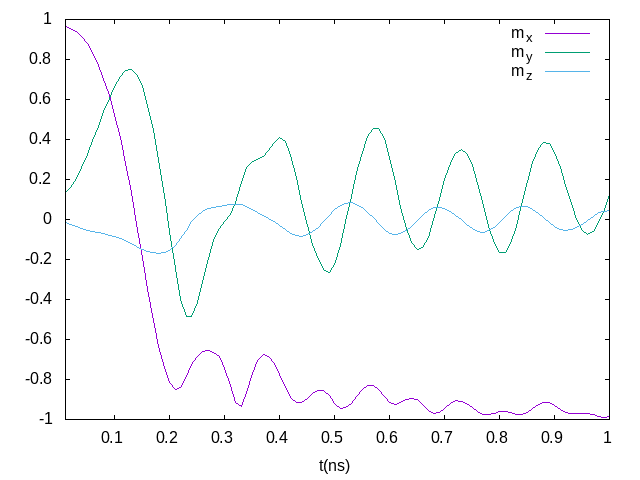

Tutorial
An example – vortex
To start a micromagnetic simulation, we first create a FDMesh
mesh = FDMesh(dx=2e-9, dy=2e-9, dz=2e-9, nx=100, ny=100)After that, we create a simulation
sim = Sim(mesh, name="vortex")and set the damping to 0.5 and switch off the precession term in LLG equation:
sim.driver.alpha = 0.5
sim.driver.precession = falseThe geometry of the system can be defined by
set_Ms(sim, circular_Ms)where circular_Ms could be a scalar or a function. The function should take six parameters (i,j,k,dx,dy,dz), for instance
function circular_Ms(i,j,k,dx,dy,dz)
if (i-50.5)^2 + (j-50.5)^2 <= 50^2
return 8.6e5
end
return 0.0
endWe add the exchange interaction and the demagnetization field to the system.
add_exch(sim, 1.3e-11)
add_demag(sim)We need to initialise the system which can be done by defining a function
function init_fun(i,j,k,dx,dy,dz)
x = i-50.5
y = j-50.5
r = (x^2+y^2)^0.5
if r<5
return (0,0,1)
end
return (y/r, -x/r, 0)
endand using
init_m0(sim, init_fun)To trigger the simulation we relax the system
relax(sim, maxsteps=1000)How to enable GPU
Using FDMeshGPU instead of FDMesh to switch on the GPU calculation,
mesh = FDMeshGPU(dx=2e-9, dy=2e-9, dz=2e-9, nx=100, ny=100)The script to use GPU to obtain the vortex structure is shown below:
using JuMag
using Printf
using NPZ
JuMag.cuda_using_double(true)
mesh = FDMeshGPU(dx=2e-9, dy=2e-9, dz=5e-9, nx=100, ny=100, nz=4)
function circular_Ms(i,j,k,dx,dy,dz)
x = i-50.5
y = j-50.5
r = (x^2+y^2)^0.5
if (i-50.5)^2 + (j-50.5)^2 <= 50^2
return 8e5
end
return 0.0
end
function init_fun(i,j,k,dx,dy,dz)
x = i-50.5
y = j-50.5
r = (x^2+y^2)^0.5
if r<5
return (0,0,1)
end
return (y/r, -x/r, 0)
end
function relax_system()
sim = Sim(mesh, driver="SD", name="sim")
set_Ms(sim, circular_Ms)
add_exch(sim, 1.3e-11, name="exch")
add_demag(sim)
init_m0(sim, init_fun)
relax(sim, maxsteps=2000, stopping_torque=1.0, save_vtk_every = 100, save_m_every=-1)
npzwrite("m0.npy", sim.spin)
end
relax_system()##Standard Problem #4
using JuMag
using Printf
using NPZ
mesh = FDMeshGPU(nx=200, ny=50, nz=1, dx=2.5e-9, dy=2.5e-9, dz=3e-9)
function relax_system(mesh)
sim = Sim(mesh, name="std4_relax", driver="SD")
set_Ms(sim, 8.0e5)
sim.driver.min_tau = 1e-10
add_exch(sim, 1.3e-11)
add_demag(sim)
init_m0(sim, (1, 0.25, 0.1))
relax(sim, maxsteps=5000, stopping_torque=10.0)
npzwrite("m0.npy", Array(sim.spin))
end
function apply_field1(mesh)
sim = Sim(mesh, name="std4_dyn")
set_Ms(sim, 8.0e5)
sim.driver.alpha = 0.02
sim.driver.gamma = 2.211e5
mT = 0.001 / (4*pi*1e-7)
add_exch(sim, 1.3e-11)
add_demag(sim)
add_zeeman(sim, (-24.6*mT, 4.3*mT, 0))
init_m0(sim, npzread("m0.npy"))
for i=1:100
run_until(sim, 1e-11*i)
end
end
relax_system(mesh)
println("Start step2 !!!")
apply_field1(mesh)
println("Run step2 again!!!")
@time apply_field1(mesh)
println("Done!")The output file is a simple text compatible with Gnuplot, like used for plot below.
